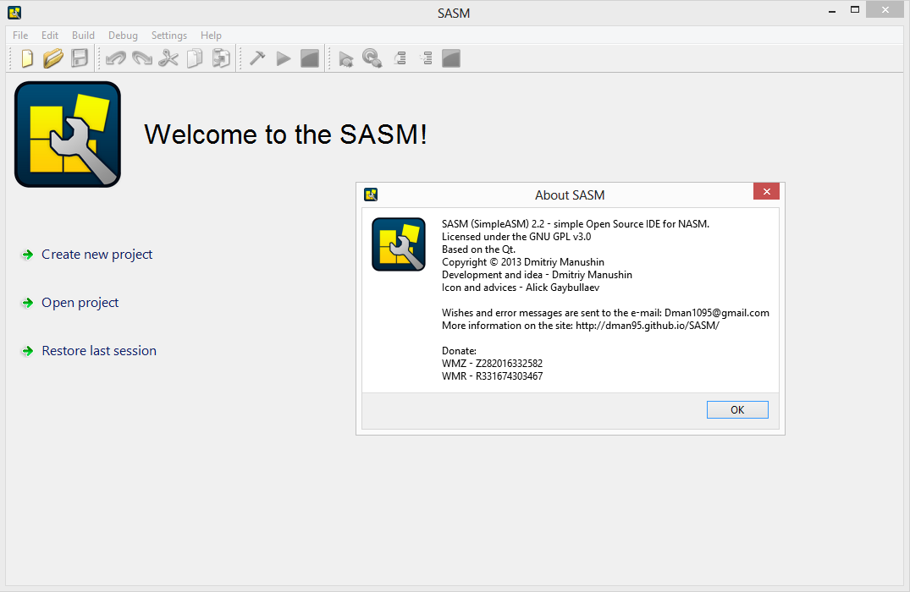
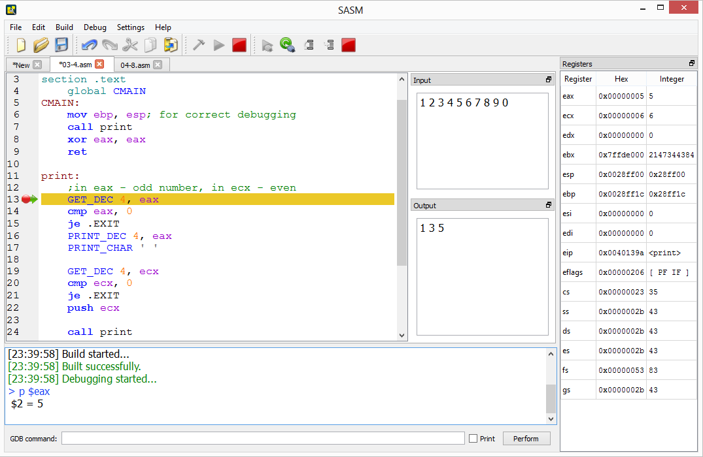

SASM
SASM (SimpleASM) - simple Open Source crossplatform IDE for NASM, MASM, GAS, FASM assembly languages. SASM has syntax highlighting and debugger. The program works out of the box and is great for beginners to learn assembly language. SASM is translated into Russian and English. Licensed under the GNU GPL v3.0. Based on the Qt.

Download for WindowsDownload for Linux
To load SASM for Linux choose your distribution in window "Build Results" on the right.
Also you can build SASM from sources, placed in GitHub repository or download SASM in zip-archive for Windows.
If you are Mac user, this article about installing SASM on Mac may help you (thanks Brian R. Hall).
Contribute to SASM
PayPal:
WebMoney: Z282016332582 or R331674303467
Yandex.Money: 410012181834380
About the program
In SASM you can easily develop and execute programs, written in NASM, MASM, GAS or FASM assembly languages. Enter code in form and simply run your program. In Windows SASM can execute programs in separate window. Enter your input data in "Input" docking field. In "Output" field you can see the result of the execution of the program. Wherein all messages and compilation errors will be shown in the form on the bottom. You can save source or already compiled (exe) code of your program to file and load your programs from file.
SASM supports working with many opened projects – new files are opened and created in new tabs. At the exit from SASM current set of opened files saved. At the next start you can restore previous session. In settings you can set font, color scheme and initial text. SASM is translated into Russian and English. All dialog windows in SASM is docking - you can choose one of many positions of them position. Also it is possible to reassign the hotkeys.
Standard "Edit" menu extended with abilities to comment/uncomment piece of source code and to create/delete indent with 4 spaces (Tab/Shift+Tab).
In my program you can debug programs using the interface to the debugger gdb. You can watch values of variables and registers. Also you can set breakpoints and move through debugged program. In additional it is possible to perform any gdb command and see its result in the log on the bottom part of window.
SASM supports 4 working with assemblers - NASM, MASM, GAS and FASM in 2 modes - x64 and x86. You can choose mode in settings on "Build" tab. Also there you can change assembler and linker options and choose programs for assembling and linking.

"io.inc" NASM macro library
SASM includes crossplatform input/output library "io.inc" for NASM. It contains I/O macro and 2 additional macro: CMAIN - entry point and CEXTERN for invoking functions, located in C language libraries ("CEXTERN printf" for example).
| Macro name | Description |
| PRINT_UDEC size, data
PRINT_DEC size, data |
Print number data in decimal representation. size – number, giving size of data in bytes - 1, 2, 4 or 8 (x64). data must be number or symbol constant, name of variable, register or address expression without size qualifier (byte[], etc.). PRINT_UDEC print number as unsigned, PRINT_DEC — as signed. |
| PRINT_HEX size, data | Similarly previous, but data is printed in hexadecimal representation. |
| PRINT_CHAR ch | Print symbol ch. ch - number or symbol constant, name of variable, register or address expression without size qualifier (byte[], etc.). |
| PRINT_STRING data | Print null-terminated text string. data - string constant, name of variable or address expression without size qualifier (byte[], etc.). |
| NEWLINE | Print newline ('\n'). |
| GET_UDEC size, data
GET_DEC size, data |
Input number data in decimal representation from stdin. size – number, giving size of data in bytes - 1, 2, 4 or 8 (x64). data must be name of variable or register or address expression without size qualifier (byte[], etc.). GET_UDEC input number as unsigned, GET_DEC — as signed. It is not allowed to use esp register. |
| GET_HEX size, data | Similarly previous, but data is entered in hexadecimal representation with 0x prefix. |
| GET_CHAR data | Similarly previous, but macro reads one symbol only. |
| GET_STRING data, maxsz | Input string with length less than maxsz. Reading stop on EOF or newline and "\n" writes in buffer. In the end of string 0 character is added to the end. data - name of variable or address expression without size qualifier (byte[], etc.). maxsz - register or number constant. |
Implementation
Windows
As NASM assembler used nasm 2.11.02, as linker - gcc 4.6.2 from MinGW (gcc 4.8.1 from MinGW64 in x64 mode) or ld 2.22 from MinGW (ld 2.23.2 from MinGW64 in x64 mode).
SASM 3.0 and greater contains fasm 1.71.21 and gas 2.23.1 from MinGW (gas 2.23.2 from MinGW64).
Also SASM contains gdb debugger from MinGW and "io.inc" macro library.
All assemblers (excluding MASM) are included in SASM and you can use they right away after their choice. MASM assembler can not be included in the assembly because of its license. To use it, you should install MASM on your computer from site http://www.masm32.com/ and specify path to MASM assembler (ml.exe, path usually "C:/masm32/bin/ml.exe") and to MASM linker (link.exe, path usually "C:/masm32/bin/link.exe") in according fields on "Build" tab in settings.
On Windows SASM is ready for work immediately after installation.
Linux
For correct working on Linux must be installed next packages: nasm or gas (if you will use they, fasm already included in SASM), gcc, gdb (for debugging). MASM in Linux is not supported.
More information about SASM you can see on project Wiki on GitHub.
Changelog:
27.05.2015 - version 3.1.4 (zip, exe): fix of localized systems debug problem.
30.03.2015 - version 3.1.3 (zip, exe): showing description of received signal has been added.
27.03.2015 - version 3.1.2 (zip, exe): debugging files with include has been improved.
24.03.2015 - version 3.1.1 (zip, exe): bugs with syntax higlighting have been fixed.
29.08.2014 - version 3.1.0 (zip, exe): changes from pull requsts and issues from GitHub - movable tabs, warning message for wrong assembler or linker executable, improve indent operation, noexecstack option for binaries in Linux.
24.07.2014 - version 3.0.1 (zip, exe): additional registers view in debugger has been added.
13.07.2014 - version 3.0 (zip, exe):
- New assemblers have been added: now NASM, GAS, MASM, FASM are supported, including syntax highlighting, debugging, and x86/x64 modes. Added ability to choose your own assembler or linker filling path to them.
- Many improvements in debugging. Now it is possible to debug programs even without debugging information for GDB (for example, written in MASM). The ability to suspend the program has been added, as well as set a breakpoint during its execution. Added folder for include files.
- Fixed problem with text editor leads to a heavy load on the processor while opening big files. Fixed a bug with the disruption of the interface after opening the settings window. Fixed many minor bugs and errors.
23.04.2014 - version 2.3.1 (zip, exe): bug with spaces in the path to temporary directory was fixed (now SASM works on Windows XP).
03.04.2014 - version 2.3 (zip, exe):
- Abilities of mode selection (x64 or x86) and assembler and linker options change were added. Added tools for compilation and debugging 64-bit code.
- 64-bit instruction and registers and NASM macro assembler highlighting was implemented. "io.inc" library adapted for using in 64-bit applications.
- Many bugs were fixed.
16.02.2014 - version 2.2 (zip, exe):
- Significantly improvements of SASM interface and usability. Full color and syntax highlighting customization. All widgets become docking windows with many variants of them location. Register and memory widgets improved, ability of saving their state. Icons and toolbars added.
- Breakpoints improved. Macro debugging improved.
- Hotkeys improvements and ability of them rebinding.
13.11.2013 - version 2.1:
- Many bugs fixed, compatibility problems fixed - installation packages for a lot of Linux systems created, compatibility with Qt 4 added, making from sources improved.
- Many improvements added, functionality expanded. In debugger added: registers and memory watches, breakpoints, continue command; improved: performing gdb commands, current line highlighting, sequential output in debugging, "io.inc" macro changed.
- Compilation in temporary folder. Mark of unsaved document. Sequential output in programs. Status of finishing of program. Time of execution of program. Font choosing.
- Help updated. New icon. Yet many minor improvements and features.
04.06.2013 - version 2.0: debugger has implemented, highlighting has been improved, many files support added, SASM (new name) has been rewrited on Qt and has become Open Source and crossplatform. Sources and new site is placed on GitHub.
21.04.2013 - version 1.0.4 - CEXTERN bug fixed.
18.03.2013 - version 1.0.3 - highlighting bug fixed, MASM bug fixed.
10.03.2013 - version 1.0.2 - bugs fixed, code autosaving added.
07.03.2013 - first version of SASM - 1.0.0.
Wishes and reports send to e-mail: Dman1095@gmail.com or left on GitHub issues.
Copyright © 2013 Dmitriy Manushin